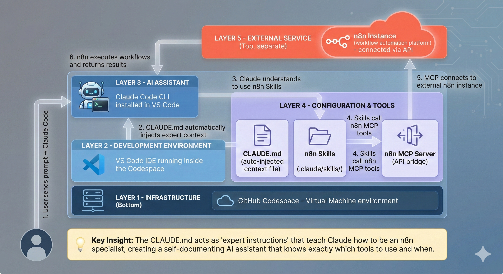

Hero Forge · Beginner Guide
The n8n Factory
Your AI Workflow Automation System
Let's break it down, one idea at a time →
The Goal
What are we actually doing?
We're going to build automations — little robots
that do boring computer tasks for you (send emails, move data, post updates) without you
lifting a finger.
Think of it like this
You're hiring a tireless assistant. But before an assistant can help, they need
a desk, tools, training, and instructions. The next slides explain each of those —
that whole set of things is called "the stack."
The Big Picture
This is the whole stack
Don't worry — it looks busy. We'll explain every box.
Just notice it has layers, stacked like floors of a building.

Piece 1 — The Foundation
☁️💻
What is a Codespace?
A Codespace is a computer that lives on the internet. You rent it,
it runs in the cloud, and you reach it through your web browser.
Analogy
It's like a rental workshop in the cloud. You don't need to buy tools or clear
space at home — you just open the door (a browser tab) and everything is already set up.
Turn it off and you're not paying for an empty room.
Piece 2 — The Workspace
🗂️
What is VS Code?
VS Code is the app you look at inside the Codespace. It shows your
files on one side and your work in the middle. It's where everything happens.
Analogy
If the Codespace is the workshop, VS Code is the workbench — the desk where you
lay out your files, tools, and projects so you can actually see and reach them.
Piece 3 — The Conversation Window
⌨️
What is the Terminal?
The Terminal is a text box where you type instructions to the
computer — and where it types back. No buttons, just a conversation.
Analogy
It's the walkie-talkie to your computer. Instead of clicking around, you say what
you want in words. It looks old-school, but it's the fastest way to give commands —
and it's where you'll talk to your AI assistant.
Piece 4 — The Assistant
🤖
What is Claude Code?
Claude Code is an AI assistant that lives in your Terminal. You tell
it what you want in plain English, and it does the actual computer work for you.
Analogy
It's a skilled employee who sits at your workbench. You're the manager: you say
"build me a workflow that emails new customers." Claude figures out the how, and does it —
while you watch and approve.
Piece 5 — Know-How
📚
What are Skills?
Skills are instruction manuals Claude can open when it needs them.
Each one teaches Claude how to do a specific job really well.
Analogy
Think of a shelf of recipe cards. Your assistant doesn't memorize everything —
when a task comes up, it grabs the right card, follows the steps, and gets it right
the first time. More skills = more things it can do expertly.
Piece 6 — Reaching the Outside World
🔌
What are Connectors (MCP)?
A Connector is a cable that plugs Claude into another app — like your
email, calendar, or your automation tool. The tech name for it is MCP.
Analogy
Skills are know-how; connectors are hands and power outlets. A connector lets
Claude actually reach into Gmail, Google Drive, or n8n and press the buttons —
not just talk about them. MCP is simply the standard shape of that plug.
Piece 7 — The Job Training
📋
What is CLAUDE.md?
CLAUDE.md is a text file of instructions that Claude reads
automatically every time it starts. It's the rulebook for this project.
Analogy
It's the employee handbook handed to your assistant on day one: "Here's how we do
things, here's the tools to use, here's what to never do." Because Claude reads it every
time, it instantly becomes an expert in your project.
Piece 8 — The Factory Floor
⚙️
What is n8n?
n8n is the automation tool where the robots actually live. You connect
boxes together — "when this happens, do that" — and it runs them for you, forever.
Analogy
n8n is the factory floor. Claude is the engineer that designs and builds the
assembly lines (called workflows); n8n is where those lines run day and night,
doing the real work without you.
Quick Check — Easy to Mix Up
Skills vs. Connectors
📚
Skills = Knowledge
Manuals that teach Claude how to do something well. They live inside the project.
🔌
Connectors = Reach
Cables that let Claude act on outside apps like Gmail or n8n. Built on MCP.
📋
CLAUDE.md = Rules
The handbook that tells Claude how to behave on this project, every time.
Knowledge to think · Reach to act · Rules to stay on track.
Putting It Together
The stack, floor by floor
1
Infrastructure — the Codespace
A rented cloud computer. The ground the whole thing stands on.
2
Workspace — VS Code & Terminal
The desk you see, and the text box where you give commands.
3
Assistant — Claude Code
The AI that does the work, guided by CLAUDE.md and Skills.
4
Tools — Skills & Connectors (MCP)
Know-how to think with, and cables to reach other apps.
5
The Factory — n8n
Where the automations Claude builds actually run.
A Day in the Life
What happens when you ask for something
STEP 1
You type a request into the Terminal in plain English.
STEP 2
Claude reads CLAUDE.md and opens the right Skills.
STEP 3
It uses Connectors to build the workflow inside n8n.
STEP 4
The automation runs on its own — the robot is now working for you.
You stay the manager. Claude does the building. n8n does the running.
You're Ready
That's the whole stack.
Cloud computer · a workbench · a walkie-talkie · an AI assistant ·
its manuals · its cables · its handbook · and a factory. Nothing more to fear —
let's go build something.
Next stop: your first automation 🚀